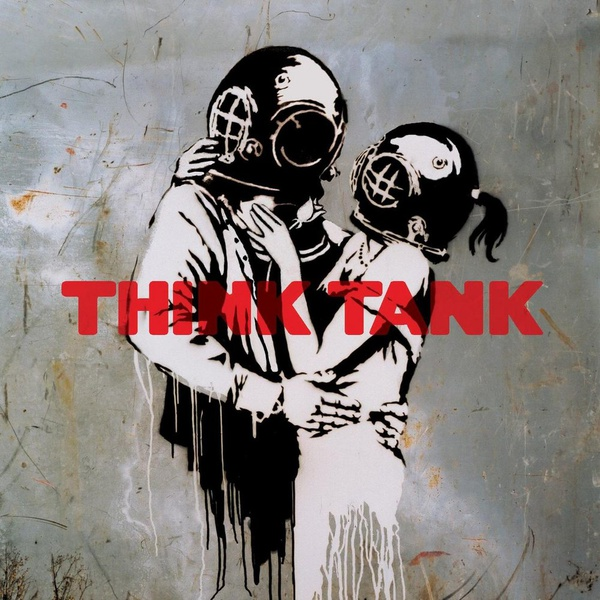

Apple Music запустил новый плейлист с русскими треками
Плейлист «Попкорн» на Apple Music состоит из популярных новинок русской музыки, которые будут еженедельно обновляться, сообщает сервис.
«В этот плейлист вошли только самые интересные поп-новинки: песни для души и танцев с элементами хип-хопа, неосоула, R&B и хауса», — говорится в сообщении.
 The Jaded Hearts Club устроили экспресс-тур по золотым хитам 60-х, Groove Armada и Йонси выпустили новые альбомы впервые за 10 лет, Монеточка вернула нам немного советской эстрады, вокалистка The xx дебютировала с сольным проектом, а в новом эпизоде Song Machine от Gorillaz спел Элтон Джон. Рассказываем о самых интересных музыкальных релизах недели.
The Jaded Hearts Club устроили экспресс-тур по золотым хитам 60-х, Groove Armada и Йонси выпустили новые альбомы впервые за 10 лет, Монеточка вернула нам немного советской эстрады, вокалистка The xx дебютировала с сольным проектом, а в новом эпизоде Song Machine от Gorillaz спел Элтон Джон. Рассказываем о самых интересных музыкальных релизах недели.
 Супергруппа The Jaded Hearts Club, в которую входят музыканты The Rascals, Jet, Muse, Blur и The Zutons, выпустила дебютный альбом. Вы справедливо в каждой песни узнаете названия великих хитов, потому что данный релиз — сборник каверов на песни начала 60-х. У The Jaded Hearts Club получился трибьют важному периоду в развитии музыки, который они наполнили фирменным звучанием и большим количеством рычащих соло.
Супергруппа The Jaded Hearts Club, в которую входят музыканты The Rascals, Jet, Muse, Blur и The Zutons, выпустила дебютный альбом. Вы справедливо в каждой песни узнаете названия великих хитов, потому что данный релиз — сборник каверов на песни начала 60-х. У The Jaded Hearts Club получился трибьют важному периоду в развитии музыки, который они наполнили фирменным звучанием и большим количеством рычащих соло.
 Спустя два года после выхода «Раскрасок для взрослых», Монеточка выпускает новый студийный альбом. С музыкой ей также помогает Витя Исаев, а на одном из треков можно услышать Noize MC. Новый альбом концептуально отличается от прошлого релиза. Звучанием многие песни отсылают к советской эстраде и старой музыке в целом. Очень просто услышать «Аквариум» или «Песняров», а песня «Шприц» и вовсе обращается к «Ленинграду»
Спустя два года после выхода «Раскрасок для взрослых», Монеточка выпускает новый студийный альбом. С музыкой ей также помогает Витя Исаев, а на одном из треков можно услышать Noize MC. Новый альбом концептуально отличается от прошлого релиза. Звучанием многие песни отсылают к советской эстраде и старой музыке в целом. Очень просто услышать «Аквариум» или «Песняров», а песня «Шприц» и вовсе обращается к «Ленинграду»